文献信息
N. W. Hendrickx et al., “A four-qubit germanium quantum processor”, Nature 591, 580 (2021). arXiv:2009.04268 · DOI:10.1038/s41586-021-03332-6 原文为 arXiv 预印本版本的机器可读转换，公式与图注以原文为准；本页仅作站内索引与全文查阅，引用请以正式出版物为准。
全文
N.W. Hendrickx,1, ∗ W.I.L. Lawrie,1 M. Russ,1 F. van Riggelen,1 S.L. de Snoo,1
R.N. Schouten,1 A. Sammak,2 G. Scappucci,1 and M. Veldhorst1, †
1QuTech and Kavli Institute of Nanoscience, Delft University of Technology, Lorentzweg 1, 2628 CJ Delft, The Netherlands 2QuTech and Netherlands Organisation for Applied Scientific Research (TNO), Stieltjesweg 1, 2628 CK Delft, The Netherlands
The prospect of building quantum circuits using advanced semiconductor manufacturing positions quantum dots as an attractive platform for quantum information processing. Extensive studies on various materials have led to demonstrations of two-qubit logic in gallium arsenide, silicon, and germanium. However, interconnecting larger numbers of qubits in semiconductor devices has remained an outstanding challenge. Here, we demonstrate a four-qubit quantum processor based on hole spins in germanium quantum dots. Furthermore, we define the quantum dots in a twoby-two array and obtain controllable coupling along both directions. Qubit logic is implemented all-electrically and the exchange interaction can be pulsed to freely program one-qubit, two-qubit, three-qubit, and four-qubit operations, resulting in a compact and high-connectivity circuit. We execute a quantum logic circuit that generates a four-qubit Greenberger-Horne-Zeilinger state and we obtain coherent evolution by incorporating dynamical decoupling. These results are an important step towards quantum error correction and quantum simulation with quantum dots.
Fault-tolerant quantum computers utilizing quantum error correction [1] to solve relevant problems [2] will rely on the integration of millions of qubits. Solid-state implementations of physical qubits have intrinsic advantages to accomplish this formidable challenge and remarkable progress has been made using qubits based on superconducting circuits [3]. While the development of quantum dot qubits has been at a more fundamental stage, their resemblance to the transistors that constitute the building block of virtually all our electronic hardware promises excellent scalability to realize large-scale quantum circuits [4, 5]. Fundamental concepts for quantum information, such as the coherent rotation of individual spins [6] and the coherent coupling of spins residing in neighboring quantum dots [7], were first implemented in gallium arsenide heterostructures. The low disorder in the quantum well allowed the construction of larger arrays of quantum dots and to realize two-qubit logic using two singlet-triplet qubits [8]. However, spin qubits in group III-V semiconductors sufer from hyperfine interactions with nuclear spins that severely limit their quantum coherence. Group IV materials naturally contain higher concentrations of isotopes with a net-zero nuclear spin and can furthermore be isotopically enriched [9] to contain only these isotopes. In silicon electron spin qubits, quantum coherence can therefore be sustained for a long time [10, 11] and single qubit logic can be implemented with fidelities exceeding 99.9 % [12, 13]. By exploiting the exchange interaction between two spin qubits in adjoining quantum dots or closely separated donor spins, two-qubit logic could be demonstrated [14–20]. Silicon, however, sufers from a large efective mass and valley degeneracy [21], which has hampered progress beyond twoqubit demonstrations.
Holes in germanium are emerging as a promising alternative [22] that combine favorable properties such as zero nuclear spin isotopes for long quantum coherence [23], low efective mass and absence of valley states [24] for relaxed requirements on device design, low charge noise for a quiet qubit environment [25], and low disorder for reproducible quantum dots [26, 27]. In addition, strained germanium quantum wells defined on silicon substrates are compatible with semiconductor manufacturing [28]. Furthermore, hole states can exhibit strong spin-orbit coupling that allows for all-electric operation [29–31] and that removes the need for microscopic components such as microwave striplines or nanomagnets, which is particularly beneficial for the fabrication and operation of two-dimensional qubit arrays. The realization of strained germanium quantum wells in undoped heterostructures [32] has led to remarkable progress. In two year’s time, germanium has progressed from the formation of stable quantum dots and quantum dot arrays [26, 27, 33], to demonstrations of single qubit logic [34], long spin lifetimes [35], and the realization of fast two-qubit logic in germanium double quantum dots [31].
Here, we advance semiconductor quantum dots beyond two-qubit realizations and execute a four-qubit quan tum circuit using a two-dimensional array of quantum dots. We achieve this by defining the four-qubit system on the spin states of holes in gate-defined germa nium quantum dots. Fig. 1A shows a scanning-electron microscopy (SEM) image of the germanium quantum processor. The quantum dots are defined in a strained ger manium quantum well on a silicon substrate (Fig. 1B) [25] using a double layer of electrostatic gates and contacted by aluminum ohmic contacts. A negative poten tial on plunger gates P1-P4 accumulates a hole quantum dot underneath that serves as qubit Q1-Q4, which can be coupled to neighboring quantum dots through dedicated barrier gates. In addition, two quantum dots are placed to the side of the two-by-two array, and the total system comprises six quantum dots. Via an external tank circuit, we configure these additional two quantum dots as radio frequency (rf) charge sensors for rapid charge detection. Using the combined signal of both charge sen sors [33], we measure the four quantum dot stability dia gram as shown in Fig. 1C. Making use of two virtual gate axes, we arrange the reservoir addition lines of the four quantum dots to have diferent relative slopes of approximately −1, +1, −0.75, 0.75 mV/mV for Q1, Q2, Q3, and Q4 respectively. Well defined charge regions (indicated as (Q1,Q2,Q3,Q4) in the white boxes) are observed, with vertical anticrossings marking the diferent interdot transitions. The high level of symmetry in the plot is a sign of comparable gate lever arms and quantum dot charging energies, confirming the uniformity in this platform and simplifying the operation of quantum dot arrays.
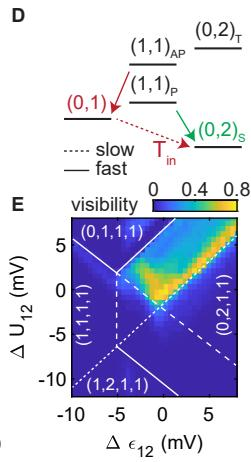
F
C
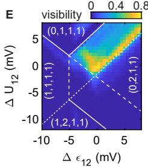
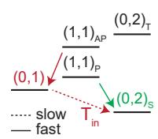
A
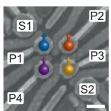
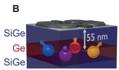
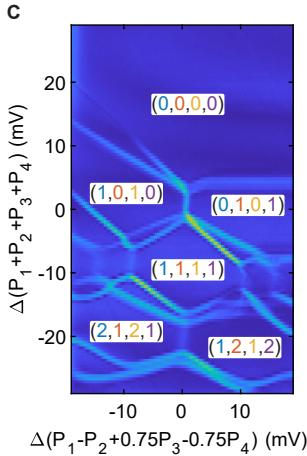
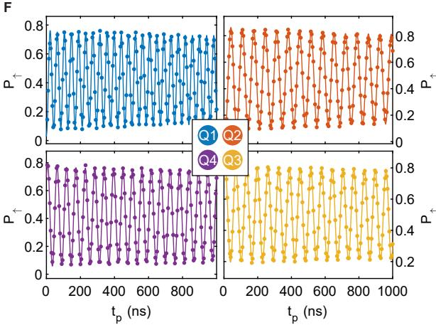
Figure 1. Four germanium hole spin qubits. (A) Scanning electron microscope image of the four quantum dot device. We define qubits underneath the four plunger gates indicated by P1-P4. The qubits can be measured using the two charge sensors S1 and S2. The scale bar corresponds to 100 nm. (B) Schematic drawing of the Ge/SiGe heterostructure. Starting from a silicon wafer, a germanium quantum well is grown in between two layers at a depth of 55 nm from the semiconductor/dielectric interface. (C) Four quantum dot charge stability diagram as a function of two virtual gates. At the vertical and diagonal bright lines a hole can tunnel between two quantum dots or a quantum dot and its reservoir respectively. As a result of the virtual axes, the addition lines of the diferent quantum dots have diferent slopes, allowing for an easy distinction of the diferent charge occupations indicated in the white boxes as (Q1, Q2, Q3, Q4). (D) Energy diagram illustrating the latched Pauli spin blockade readout. When pulsing from the charge state to the (0,2) charge state, only the polarized triplet states allow the holes to move into the same quantum dot, leaving an (0,2) charge state (green). Interdot tunneling is blocked for the two antiparallel spin states and as a result the hole on the first quantum dot will subsequently tunnel to the reservoir leaving an (0,1) charge state (red), locking the diferent spin states into diferent charge states. (E) Readout visibility as defined by the diference in readout between either applying no rotation and a π-rotation to Q2. The readout point is moved around the (1,1)-(0,2) anticrossing of the Q1Q2 system and a clear readout window can be observed bounded by the diferent (extended) reservoir transition lines indicated by the dotted lines. (F) The qubits can be rotated by applying a microwave tone resonant with the Zeeman splitting of the qubit. Coherent Rabi rotations can be observed as a function of the microwave pulse length for all qubits Q1-Q4.
For the qubit readout we make use of Pauli-spin blockade to convert the spin states into a charge signal that can be detected by the sensors. In germanium, however, the spin-orbit coupling can significantly lower the spin lifetime during the readout process, in particular when the spin-orbit field is perpendicular to the external magnetic field, reducing the readout fidelity [34, 36]. Here, we overcome this efect by making use of a latched readout process [37]. During the readout process, as illustrated in Fig. 1D, a hole can tunnel spin-selectively to the reservoir as a result of diferent tunnel rates of both quantum dots to the reservoir. After this process, the system is locked in this charge state for the slow reservoir tunnel time . We achieve this efect by pulsing into the area in the (0,2) charge region bounded by the extended (1,1)-(0,1) (fast) and the extended (1,1)-(1,2) (slow) transitions (dotted lines in Fig. 1E). When the interdot tunneling into the (0,2) charge state is blocked, the hole in the first quantum dot will quickly tunnel into the reservoir. This locks the spin state in the metastable (0,1) charge state, with the decay to the (0,2) ground state governed by the slow tunnel rate between the second quantum dot and the reservoir. The high level of control in germanium allows the tuning of to arbitrarily long time scales by changing the potential applied to the corre sponding reservoir barrier gates. We set and ms (Fig. S2), both significantly longer than the signal integration time . We operate in a parity readout mode where we observe both antiparallel spin states to be blocked (Fig. S3AB). We speculate this is caused by the strong spin-orbit coupling mixing the parallel (1,1) states with the (0,2) state, and caus ing strong relaxation of the upper parallel spin state. By both increasing the interdot coupling and elongating the ramp between the manipulation and readout point, we can transition into a state selective readout where only the |↓↑i state results in spin blockade (Fig. S3CD), with a slightly reduced readout visibility.
In our experiments, we configure the system such that the spin-orbit field is oriented along the direction of the external magnetic field . This minimizes relaxation and we project all qubit measurements onto this readout direction, thus reading out qubit pairs Q1Q2 and Q3Q4. Each charge sensor can detect transitions in both qubit pairs, but is mostly sensitive to their respective nearby quantum dots. We maximize the readout visibility as defined by the diference between the readout of a spin-up and spin-down state by scanning the readout level around the relevant anticrossing. This is illustrated for the Q1Q2 pair in Fig. 1E, where a clear readout window with maximum visibility can be observed bounded between the (extended) reservoir transitions of the two quantum dots.
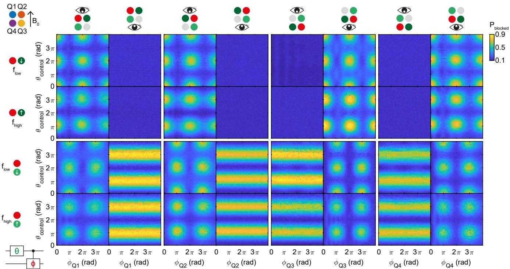
Figure 2. Controlled rotations between all nearest-neighbor qubit pairs. By selectively enabling the exchange interaction between each pair of qubits, we can implement two-qubit controlled rotations (CROTs). The pulse sequence consists of a single preparation gate with length θ on the control qubit (labeled green), followed by a controlled rotation on one of the resonance lines of the target qubit (labelled in red). Both qubit pairs Q1Q2 and Q3Q4 are read out in single-shot mode and the position of the eye on top of each column indicates the respective readout pair. Each of the four main columns corresponds to conditional rotations on a diferent qubit as indicated by the red dot. Rows one and two show the results for the horizonta interaction (dark green), while rows three and four show the two-qubit interaction for the vertical direction (light green) with respect to the external magnetic field, as indicated in the top left. Rows one and three correspond to driving the lower frequenc conditional resonance line, while rows two and four show driving of the other resonance line
Coherent rotations can be implemented by applying electric microwave signals to the plunger gates that define the qubits, exploiting the spin-orbit coupling for fast driving [30, 38]. We initialize the system in the |↓↓↓↓i state by sequentially pulsing both the Q1Q2 and Q3Q4 double quantum dot systems from their respective states adiabatically into their states. We then perform the qubit manipulations, after which we perform the spin readout as described above. We observe qubit resonances at and , corresponding to efective g-factors of , and We note that these g-factors can be electrically modu lated using nearby gates as a means to ensure individual qubit addressability. Fig. 1F shows the single-shot spin up probability for each of the four qubits after applying an on-resonant microwave burst with increasing time duration , resulting in coherent Rabi oscillations.
To quantify the quality of the single qubit gates, we perform benchmarking of the Cliford group [39] (Fig. S4) and find single qubit gate fidelities exceeding 99 % for all qubits. The fidelity of Q3 is even above 99.9 %, thereby comparing to benchmarks for quantum dot qubits in isotopically purified silicon [12, 13]. We find spin lifetimes between ms (Fig. S5), comparable to val ues reported before for holes in planar germanium [35]. Furthermore, we observe to be between 150-400 ns for the diferent qubits (Fig. S6A), but are able to extend phase coherence up to by performing Carr-Purcell-Meiboom-Gill (CPMG) refocusing pulses (Fig. S6C), more than two orders of magnitude larger than previously reported for hole quantum dot qubits [29–31]. This indicates the qubit phase coherence is mostly limited by low-frequency noise, which is confirmed by the predominantly noise spectrum we observe by Ramsey and dynamical decoupling noise spectroscopy (Fig. S7). This noise could originate in the nuclear spin bath present in germanium, which could be mitigated by isotopic enrichment. Alternatively, it could be caused by charge noise acting on the spin state through the spin-orbit coupling and it is predicted that the sensitivity to this type of noise could be mitigated by careful optimization of the electric field environment [40] or moving to a multi-hole charge occupancy, screening the influence of charge impurities [41], potentially enabling even higher fidelity operations.
A
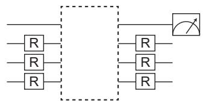
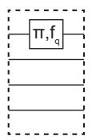
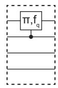
B
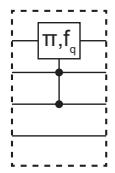
G
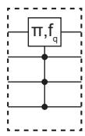
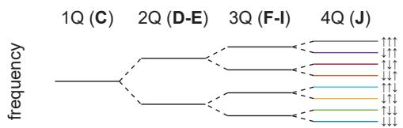
C
E
J
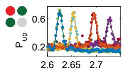
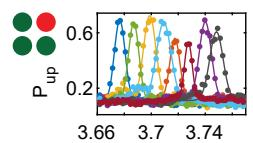
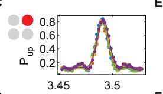
F
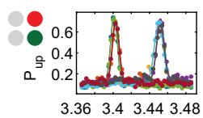
D
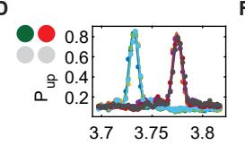
fq (GHz)
H
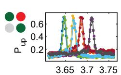
fq (GHz)
K
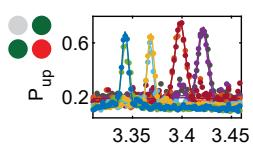
I
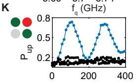
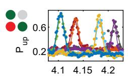
fq (GHz)
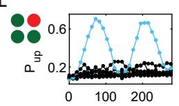
tp (ns)
Figure 3. Resonant one, two, three, and four-qubit gates. (A) Circuit diagram of the experiment performed in panels C-L. All eight permutations of the three control qubit eigenstates are prepared, with R being either no pulse or a π-pulse on the respective qubit. Next, the resonance frequency of the target qubit is probed using a π-rotation with varying frequency . Finally, the prepared qubits are projected back and the target qubit state is measured. By changing the diferent interdot couplings we can switch between resonant single, two, three, and four-qubit gates as indicated in the dashed boxes. (B) Turning on the exchange interaction between the diferent qubit pairs splits the resonance frequency in two, four, and eight for 1, 2 and 3 enabled pairs respectively. The colors of the line segments correspond to the colors in panels C-L. (C) By turning all exchange interactions of, the qubit resonance frequency of Q2 is independent of the prepared state of the other three qubits, resulting in an efective single-qubit rotation. (D-E) By turning on a single exchange interaction or (E), the resonance line splits in two. (F-I), Turning on both exchange interactions to the neighboring quantum dots results in the resonance line splitting in four, for Q2 (F), Q1 (G), Q3 (H), Q4 (I) respectively. (J) Turning on the exchange interactions between three pairs of quantum dots splits the resonance line in eight. (K-L) Resonant driving of the three-qubi gate (K) and the four-qubit gate (L) with Q2 being the target qubit, shows Rabi driving as a function of pulse length demonstrating the coherent evolution of the operation.
Universal quantum logic can be accomplished by combining the single qubit rotations with a two-qubit entangling gate. We implement this using a conditional rotation (CROT) gate, where the resonance frequency of the target qubit depends on the state of the control qubit, mediated by the exchange interaction J between the two quantum dots. The exchange interaction between the quantum dots is controlled using a virtual barrier gate (details in Materials and Methods), coupling the two quantum dots while keeping the detuning and on-site energy of the quantum dots constant and close to the charge-symmetry point. We demonstrate CROT gates between all four pairs of quantum dots in Fig. 2, proving that spin qubits can be coupled in two dimensions. A sequence of qubit pulses is applied, as indicated in the diagram, consisting of a single qubit control pulse (green) and a target qubit two-qubit pulse (red). We vary the length of both the control pulse as well as the length of the target qubit pulse , with ns (details in Table S1). The conditional rotations are performed on all four target qubits (main four columns) for both the horizontally in teracting qubits (rows 1 and 2), as well as the vertically interacting qubits (rows 3 and 4), by driving the |↓↓i-|↑↓i transitions with (rows 1 and 3), as well as the inverse transitions with (rows 2 and 4), with . We then perform a measurement on both readout pairs by sequentially pulsing the Q1Q2 (left sub-columns), and the Q3Q4 qubit pairs (right subcolumns) to their respective readout points. Because the target qubit resonance frequency depends on the control qubit state, the conditional rotation is characterized by the fading in and out of the target qubit rotations as a function of the control qubit pulse length. The pattern is therefore shifted by a π rotation on the control qubit, for driving the two separate transitions. When driving the |↓↓i-|↑↓i transition of the qubit pairs used for readout (row 1), we apply an additional single-qubit π-pulse to the preparation qubit for symmetry, since the control qubit also serves as the readout ancilla. When the control qubit is in a diferent readout pair as the target qubit (rows 3 and 4), we can independently observe the single qubit control, and two-qubit target qubit rotations in the two readout systems. By setting the pulse length equal to , a fast CX gate can be obtained within approximately ns between all of the four qubit pairs.
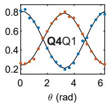
A
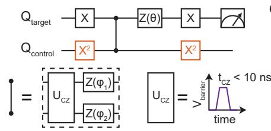
B
C
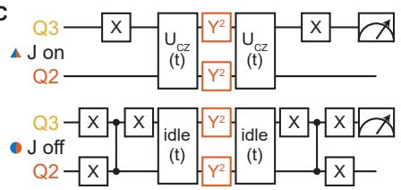
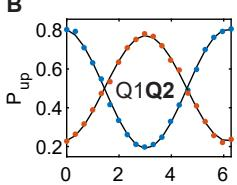
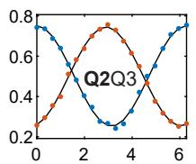
D
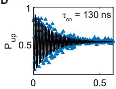
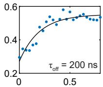
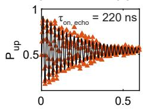
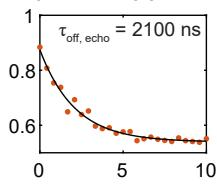
Figure 4. Controlled phase gate and dynamical decoupling. (A) Circuit diagram of the experiment performed in panel B. The controlled phase gate is probed by performing a Ramsey sequence on the target qubit for both basis states of the control qubit. The phase of the second (X) gate is swept by performing an update of the microwave phase through quadrature modulation. Additionally, a phase update is performed on both the target and control qubit to compensate for any single qubit phases picked up as a result of the gate pulsing to achieve a controlled-Z (CZ) gate. (B) The spin-up probability of the target qubit (in bold) as a function of the phase θ of the second X gate for the control qubit initialized in the |↓i (blue) and |↑i (red) state. Measurements for the inverted target and control qubits in Fig. S10. By applying an exchange pulse and single qubit phase updates, we achieve a CZ gate at rad. (C) Circuit diagrams of the experiment performed in panel D. The phase coherence throughout the two-qubit experiment is probed using a Ramsey sequence, both for the case with J on (top) and of (bottom) and both with (orange) and without (blue) applying an echo pulse. (D) Spin-up probability as a function of the experiment length, for the situation with exchange on (left, triangles) and of (right, circles). From the decay data we extract characteristic decay times τ of ns, ns, ns, and ns (details in Materials and Methods).
A
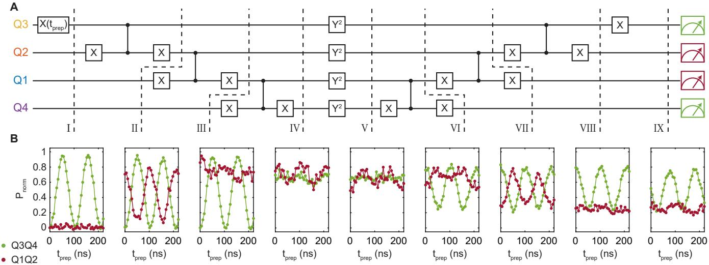
Figure 5. Coherent generation of a four-qubit Greenberger-Horne-Zeilinger (GHZ) state. (A-B) A four-qubit GHZ state is created by applying three sequential two-qubit gates, each consisting of an X-CZ-X gate circuit. Next, a decoupling pulse is applied, after which we disentangle the GHZ state again (circuit diagram in A). Pulses pictured in the same column are applied simultaneously. The initial state of Q3 is varied by applying a preparation rotation of length t. For diferent stages throughout the algorithm (dashed lines), we measure the non-blocked state probability as a function of t for both the Q1Q2 and Q3Q4 readout system, normalized to their respective readout visibility. At the end of the algorithm the qubit states correspond to the initial single qubit rotation, and the clear oscillations confirm the coherent evolution of the algorithm from isolated qubit states to a four-qubit GHZ state. (B).
To demonstrate full control over the coupling between the diferent qubits, we measure the qubit resonance frequency as a function of the eight possible permutations of the diferent basis states of the other three qubits, as illustrated in Fig. 3A-B. Without any exchange present, the resonance frequency of the target qubit should be independent on the preparation of the other three qubits, as schematically depicted in Fig. 3C. When the exchange to one of the neighboring quantum dots is enabled by pulsing the virtual barrier gate, the resonance line splits in two, allowing for the operation of the CROT gate, as is shown for both the Q1-Q2 and Q2-Q3 interactions in Fig. 3D and E respectively. When both barriers to the nearest-neighbors are pulsed open at the same time, we observe a fourfold splitting of the resonance line (Fig. 3F-I). This allows the performance of a resonant i-Tofoli three-qubit gate (Fig. 3K and Fig. S8), which has theoretically been proposed as an eficient manner to create the Tofoli, Deutsch, and Fredkin gates [42]. We observe a diference in the eficiency at which the diferent conditional rotations can be driven, as can also be seen from the width of the resonance peaks in Fig. 3F-I. This is expected to happen when the exchange energy is comparable to the diference in Zeeman splitting and is caused by the mixing of the basis states due to the exchange interaction between the holes [43] (details in Materials and Methods). Finally, we open three of the four virtual barriers and observe the resonance line splitting in eight, being diferent for all eight permutations of the controlqubit preparation states (Fig. 3J). This enables us to execute a resonant four-qubit gate and in Fig. 3L we show the coherent operation of a three-fold conditional rotation (see Fig. S8 for the coherent operation of the other resonance lines).
While the demonstration of these conditional rotations can be beneficial for the simulation of larger coupled spin systems, the ability to dynamically control the exchange interaction allows for faster two-qubit operations [14, 16]. We eficiently implement controlled phase (CPHASE)
gates between the diferent qubit pairs by adiabatically pulsing the exchange interaction using the respective virtual barrier gate. Increasing the exchange interaction, the antiparallel spin states will shift in energy with respect to the parallel spin states, giving rise to a conditional phase accumulation. We control the length and size of the volt age pulse (Fig S9) to acquire a CZ gate, in which the antiparallel spin states accumulate a phase of exactly π with respect to the parallel spin states. We demonstrate this in Fig. 4A-B, where we employ a Ramsey sequence to measure the conditional phase. After the exchange pulse we apply a software Z gate to both the target and control qubits to compensate for individual single qubit phases. As a result of the large range over which the exchange interaction can be controlled, we achieve fast CZ gates that are executed well within 10 ns for all qubit pairs (details in Table S2).
To prepare our system for quantum algorithms, we implement decoupling pulses into the multi-qubit sequences to extend phase coherence, as demonstrated in Fig. 4C-D. To probe the efect of a decoupling pulse when exchange is on (Fig. 4D, left, triangles), we perform a CPHASE gate between qubits Q2 and Q3 and compare the decay of the resulting exchange oscillations as a function of the oper ation time for the situations with (orange) and without (blue) a echo pulse. We observe an extended duration for the conditional phase rotations of ns when applying a decoupling pulse, compared to ns for a standard CPHASE gate. A more relevant situation however, is the coherence of the two-qubit entangled state. We probe this by entangling Q2 and Q3 by form ing the Bell state and letting the system evolve for time 2t (Fig. 4D, right, circles). Next, we disentangle the system again and measure the spin-up probability of Q3 as a function of the evolution time. Without the decoupling pulse, we observe the loss of coherence after a characteristic time ns. However, by applying the additional echoing pulse on both Q2 and Q3, we can significantly extend this time scale beyond enough to perform a series of single and multi-qubit gates, owing to our short operation times.
We show this by coherently generating and disentangling a four-qubit Greenberger-Horne-Zeilinger (GHZ) state (Fig. 5). Making use of the fast two-qubit CZ gates, as well as a decoupling pulse on all qubits, we can main tain phase coherence throughout the experiment. We perform a parity readout on both the Q1Q2 (red) and Q3Q4 (green) at diferent stages of the algorithm and nor malize the observed blocked state fraction to the readout visibility. We prepare a varying initial state by applying a microwave pulse of length t to Q3, as observed in I. After applying CZ gates between all four qubits, the system resides in an entangled GHZ type state at for a preparation pulse on Q3. The efective spin state oscillates between the antiparallel |1010i and |0101i states as a function of resulting in a high state readout for all t. The small oscillation that can still be observed for the Q1Q2 system, is caused by a small diference in readout visibility for the two distinct antiparallel spin states. Next, we deploy a decoupling pulse to echo out all single qubit phase fluctuations during the experiment (Fig. S11). After disentangling the system again, we project the Q3 qubit state by applying a final X (π/2) gate, and indeed recover the initial Rabi rotation.
The demonstration of a two-by-two four-qubit array shows that quantum dot qubit systems can be scaled in two-dimensions and multi-qubit logic can be executed. The hole states used are subject to strong spin-orbit coupling, enabling all-electrical driving of the spin state, beneficial for scaling up to even larger systems. Making use of a latched readout mechanism overcomes fast spin relaxation due to the spin-orbit coupling. Furthermore, the ability to freely couple one, two, three and four spins using fast gate pulses has great prospects both for performing high-fidelity quantum gates as well as studying exotic spin systems using analog quantum simulations. While the execution of relevant quantum algorithms will require many more qubits, the germanium platform has the potential to leverage the enormous advancements in semiconductor manufacturing techniques for the realization of fault-tolerant quantum processors.
ACKNOWLEDGEMENTS
We thank L.M.K. Vandersypen for useful discussions and thank S.G.J. Philips for his contributions to software development. M.V. acknowledges support through a Vidi grant, two projectruimte grants, and an NWA grant, all associated with the Netherlands Organization of Scientific Research (NWO).
COMPETING INTERESTS
The authors declare no competing interests. Correspondence should be addressed to M.V. (M.Veldhorst@tudelft.nl).
DATA AVAILABILITY
All data underlying this study will be available from the 4TU ResearchData repository.
SUPPLEMENTARY MATERIALS
Materials and Methods Tables S1 – S2 Figures S1 – S11 References (S1 - S14)
∗ n.w.hendrickx@tudelft.nl † m.veldhorst@tudelft.nl
[1] B. M. Terhal. Quantum error correction for quantum memories. Rev. Mod. Phys. 87, 307 (2015).
[2] M. Reiher, N. Wiebe, K. M. Svore, D. Wecker, M. Troyer. Elucidating reaction mechanisms on quantum computers. PNAS 114, 7555 (2017).
[3] F. Arute, et al.. Quantum supremacy using a programmable superconducting processor. Nature 574, 505 (2019).
[4] D. Loss, D. P. DiVincenzo. Quantum computation with quantum dots. Phys. Rev. A 57, 120 (1998).
[5] L. M. K. Vandersypen, et al.. Interfacing spin qubits in quantum dots and donors—hot, dense, and coherent. npj Quantum Information 3, 34 (2017).
[6] F. H. L. Koppens, et al.. Driven coherent oscillations of a single electron spin in a quantum dot. Nature 442, 766 (2006).
[7] J. R. Petta, et al.. Coherent Manipulation of Coupled Electron Spins in Semiconductor Quantum Dots. Science 309, 2180 (2005).
[8] M. D. Shulman, et al.. Demonstration of Entanglement of Electrostatically Coupled Singlet-Triplet Qubits. Science 336, 202 (2012).
[9] K. M. Itoh, H. Watanabe. Isotope engineering of silicon and diamond for quantum computing and sensing applications. MRS Commun. 4, 143 (2014).
[10] J. T. Muhonen, et al.. Storing quantum information for 30 seconds in a nanoelectronic device. Nat. Nanotech. 9, 986 (2014).
[11] M. Veldhorst, et al.. An addressable quantum dot qubit with fault-tolerant control-fidelity. Nat. Nanotech. 9, 981 (2014).
[12] J. Yoneda, et al.. A quantum-dot spin qubit with coherence limited by charge noise and fidelity higher than 99.9%. Nature Nanotechnology 13, 102 (2018).
[13] C. H. Yang, et al.. Silicon qubit fidelities approaching incoherent noise limits via pulse engineering. Nat Electron 2, 151 (2019).
[14] M. Veldhorst, et al.. A two-qubit logic gate in silicon. Nature 526, 410 (2015).
[15] D. M. Zajac, et al.. Resonantly driven CNOT gate for electron spins. Science 359, 439 (2018).
[16] T. F. Watson, et al.. A programmable two-qubit quantum processor in silicon. Nature 555, 633 (2018).
[17] W. Huang, et al.. Fidelity benchmarks for two-qubit gates in silicon. Nature 569, 532 (2019).
[18] Y. He, et al.. A two-qubit gate between phosphorus donor electrons in silicon. Nature 571, 371 (2019).
[19] M. T. Mądzik, et al.. Conditional quantum operation of two exchange-coupled single-donor spin qubits in a MOScompatible silicon device. arXiv: 2006.04483 [cond-mat] (2020).
[20] L. Petit, et al.. Universal quantum logic in hot silicon qubits. Nature 580, 355 (2020).
[21] F. A. Zwanenburg, et al.. Silicon quantum electronics. Rev. Mod. Phys. 85, 961 (2013).
[22] G. Scappucci, et al.. The germanium quantum information route. arXiv: 2004.08133 [cond-mat] (2020).
[23] K. Itoh, et al.. High purity isotopically enriched 70-Ge and 74-Ge single crystals: Isotope separation, growth, and properties. J. Mater. Res. 8, 1341 (1993).
[24] M. Lodari, et al.. Light efective hole mass in undoped Ge/SiGe quantum wells. Phys. Rev. B 100, 041304 (2019).
[25] M. Lodari, et al.. Low percolation density and charge noise with holes in germanium. arXiv: 2007.06328 [condmat] (2020).
[26] N. W. Hendrickx, et al.. Gate-controlled quantum dots and superconductivity in planar germanium. Nature Communications 9, 2835 (2018).
[27] W. I. L. Lawrie, et al.. Quantum dot arrays in silicon and germanium. Appl. Phys. Lett. 116, 080501 (2020).
[28] R. Pillarisetty. Academic and industry research progress in germanium nanodevices. Nature 479, 324 (2011).
[29] R. Maurand, et al.. A CMOS silicon spin qubit. Nature Communications 7, 13575 (2016).
[30] H. Watzinger, et al.. A germanium hole spin qubit. Nature Communications 9, 3902 (2018).
[31] N. W. Hendrickx, D. P. Franke, A. Sammak, G. Scappucci, M. Veldhorst. Fast two-qubit logic with holes in germanium. Nature 577, 487 (2020).
[32] A. Sammak, et al.. Shallow and Undoped Germanium Quantum Wells: A Playground for Spin and Hybrid Quantum Technology. Advanced Functional Materials 29, 1807613 (2019).
[33] F. van Riggelen, et al.. A two-dimensional array of singlehole quantum dots. arXiv:2008.11666 [cond-mat] (2020).
[34] N. W. Hendrickx, et al.. A single-hole spin qubit. Nature Communications 11, 3478 (2020).
[35] W. I. L. Lawrie, et al.. Spin Relaxation Benchmarks and Individual Qubit Addressability for Holes in Quantum
Dots. Nano Lett. (2020).
[36] J. Danon, Y. V. Nazarov. Pauli spin blockade in the presence of strong spin-orbit coupling. Phys. Rev. B 80, 041301 (2009).
[37] P. Harvey-Collard, et al.. High-Fidelity Single-Shot Readout for a Spin Qubit via an Enhanced Latching Mecha nism. Phys. Rev. X 8, 021046 (2018).
[38] D. V. Bulaev, D. Loss. Electric Dipole Spin Resonance for Heavy Holes in Quantum Dots. Phys. Rev. Lett. 98, 097202 (2007).
[39] E. Knill, et al.. Randomized benchmarking of quantum gates. Phys. Rev. A 77, 012307 (2008).
[40] Z. Wang, et al.. Suppressing charge-noise sensitivity in high-speed Ge hole spin-orbit qubits. arXiv: 1911.11143 [cond-mat] (2019).
[41] E. Barnes, J. P. Kestner, N. T. T. Nguyen, S. Das Sarma. Screening of charged impurities with multielectron singlet-triplet spin qubits in quantum dots. Phys. Rev. B 84, 235309 (2011).
[42] M. J. Gullans, J. R. Petta. Protocol for a resonantly driven three-qubit Tofoli gate with silicon spin qubits. Phys. Rev. B 100, 085419 (2019).
[43] B. Hetényi, C. Kloefel, D. Loss. Exchange interaction of hole-spin qubits in double quantum dots in highly anisotropic semiconductors. Phys. Rev. Research 2, 033036 (2020).